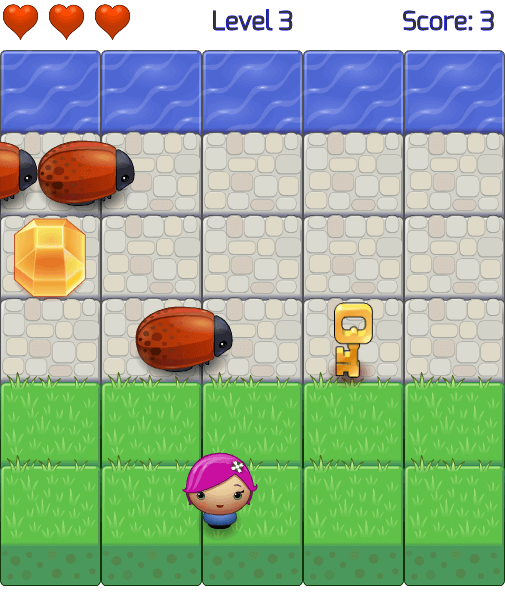

Go For Water Game
The objective of the game is for the player to reach the water, collect many collectibles (gem, star and key) to score points, and avoid the bugs to prevent losing a life.
How to Run
To run the game, you just need to open the index.html file in a browser that supports HTML5. You can use the latest Google Chrome or Firefox browser.
Controls
Arrow Keys -
Use the Arrow Keys to move the player up, down, left or right of the screen. You can also press two arrow keys at once to move to their combined direction. E.g. Pressing Up and Left Arrow Keys will move the player to the North West direction of the screen.
ESC Key -
During the game, press the Esc key to pause the game. When the game is over, press the Esc key to play a New Game.
Scoring
There are 2 ways on how to earn points and increase the score:
- Reach the water and earn 1 point
- Collect items on the road (gem, star, key) and earn 1 - 2 points
Levels
The level will increase once the player reached the water.
Collectibles
- Gem - collecting a gem will give you 1 point
- Star - collecting a star will give you 2 points and 1 extra life
- Key - collecting a key will give you 2 points and new game row combinations
Life
Initially, the player have 3 lives as indicated by the 3 hearts at the upper left corner of the screen.
The player can lose a life by colliding with an enemy (bug).
The player can earn a life by collecting a star. It will have at most 3 lives only.